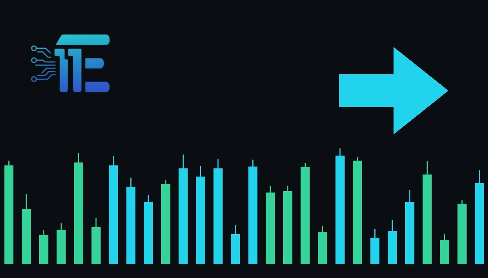

Gold and Oil Trade on Holiday Schedule as Markets Pauseមាស និងប្រេងបន្តជួញដូរក្នុងកាលវិភាគថ្ងៃបុណ្យ ខណៈទីផ្សារផ្អាក
XAU/USD impact: ● Neutralផលប៉ះពាល់លើ XAU/USD: ● អព្យាក្រឹត

Stock markets are closed for Thanksgiving, but gold and oil futures continue trading on a shortened schedule. This holiday session keeps precious metals in focus while major broader equity benchmarks remain paused.
ទីផ្សារភាគហ៊ុនត្រូវបានបិទសម្រាប់ពិធីបុណ្យ Thanksgiving ប៉ុន្តែញ្ញុបមាស និងប្រេងបន្តជួញដូរតាមកាលវិភាគខ្លី។ វគ្គជួញដូរថ្ងៃបុណ្យនេះរក្សាការចាប់អារម្មណ៍លើលោហធាតុមានតម្លៃ ខណៈសន្ទស្សន៍ភាគហ៊ុនធំៗផ្អាកដំណើរការ។
Stock markets across the United States are currently shut for the Thanksgiving holiday break, halting standard equity trading activity. However, alternative instruments continue to operate despite the festive interruption. Specifically, gold and oil futures are still actively trading on a shortened holiday schedule, allowing market participants to maintain positions.
ទីផ្សារភាគហ៊ុនទូទាំងសហរដ្ឋអាមេរិកត្រូវបានបិទសម្រាប់ការសម្រាកបុណ្យ Thanksgiving ដែលធ្វើឱ្យសកម្មភាពជួញដូរភាគហ៊ុនធម្មតាឈប់សម្រាក។ ទោះជាយ៉ាងណាក៏ដោយ ឧបករណ៍ជួញដូរផ្សេងទៀតនៅតែបន្តដំណើរការ ទោះបីមានការរអាក់រអួលក្នុងពិធីបុណ្យក៏ដោយ។ ជាពិសេស ញ្ញុបមាស និងប្រេងនៅតែសកម្មក្នុងការជួញដូរលើកាលវិភាគថ្ងៃបុណ្យដ៏ខ្លី ដែលអនុញ្ញាតឱ្យអ្នកចូលរួមទីផ្សាររក្សាជំហររបស់ខ្លួន។
The transmission channel for gold during holiday sessions typically revolves around thin liquidity conditions. With major institutional desks operating with reduced staff, price action in XAU/USD can sometimes experience exaggerated moves if unexpected macro headlines cross the wires. While no major domestic economic releases or Federal Reserve policy announcements are scheduled during the shutdown, traders continue to monitor broader currency fluctuations and global developments that influence the US dollar and Treasury yields.
ច្រកបញ្ជូនសម្រាប់មាសក្នុងអំឡុងពេលវគ្គជួញដូរថ្ងៃបុណ្យជាទូទៅទាក់ទងនឹងលក្ខខណ្ឌសាច់ប្រាក់ងាយស្រួលទាប។ ជាមួយនឹងតុស្ថាប័នធំៗដែលដំណើរការដោយបុគ្គលិកថយចុះ សកម្មភាពតម្លៃក្នុង XAU/USD ពេលខ្លះអាចជួបប្រទះការផ្លាស់ប្តូរខ្លាំងប្រសិនបើព័ត៌មានម៉ាក្រូដែលមិនបានរំពឹងទុកកើតឡើង។ ខណៈពេលដែលគ្មានទិន្នន័យសេដ្ឋកិច្ចក្នុងស្រុកធំ ឬសេចក្តីប្រកាសគោលនយោបាយរបស់ Fed ត្រូវបានកំណត់ពេលក្នុងអំឡុងពេលបិទ អ្នកជួញដូរបន្តតាមដានការប្រែប្រួលរូបិយប័ណ្ណទូលំទូលាយ និងការអភិវឌ្ឍន៍សកលដែលជះឥទ្ធិពលដល់ដុល្លារអាមេរិក និងអត្រាប័ណ្ណបំណុល។
A balanced view of current holiday trading suggests that low volume can cut both ways for precious metals. On one hand, supportive conditions for gold typically emerge if safe-haven demand ticks higher or if the US dollar softens due to lack of fresh economic support. On the other hand, a resilient US dollar or firm bond yields could pressure XAU/USD lower if thin liquidity leads to sudden selling spikes.
ទស្សនៈមានតុល្យភាពនៃការជួញដូរថ្ងៃបុណ្យបច្ចុប្បន្នបង្ហាញថាបរិមាណទាបអាចប៉ះពាល់ដល់ទាំងសងខាងសម្រាប់លោហធាតុមានតម្លៃ។ ម្យ៉ាងវិញទៀត លក្ខខណ្ឌគាំទ្រសម្រាប់មាសជាធម្មតាកើតឡើងប្រសិនបើការទាមទារទ្រព្យសុវត្ថិភាពកើនឡើង ឬប្រសិនបើដុល្លារអាមេរិកធ្លាក់ចុះដោយសារការខ្វះការគាំទ្រសេដ្ឋកិច្ចថ្មី។ ម្យ៉ាងវិញទៀត ដុល្លារអាមេរិកដ៏រឹងមាំ ឬអត្រាប័ណ្ណបំណុលរឹងអាចដាក់សម្ពាធលើ XAU/USD ឱ្យធ្លាក់ចុះ ប្រសិនបើសាច់ប្រាក់ងាយស្រួលទាបនាំឱ្យមានការលក់ចេញភ្លាមៗ។
Traders should watch upcoming post-holiday liquidity flows and any late-week economic data that could shift rate expectations. As normal trading hours resume, market participants will closely track the broader trajectory of the US dollar, real yields, and any fresh geopolitical developments that might alter safe-haven demand for gold.
អ្នកជួញដូរគួរតែមើលលំហូរសាច់ប្រាក់ងាយស្រួលក្រោយថ្ងៃបុណ្យ និងទិន្នន័យសេដ្ឋកិច្ចចុងសប្តាហ៍ដែលអាចផ្លាស់ប្តូរការរំពឹងទុកអត្រាការប្រាក់។ នៅពេលដែលម៉ោងជួញដូរធម្មតាវិលត្រឡប់មកវិញ អ្នកចូលរួមទីផ្សារនឹងតាមដានយ៉ាងដិតដល់នូវគន្លងទូទៅនៃដុល្លារអាមេរិក ទិន្នផលពិតប្រាកដ និងការអភិវឌ្ឍន៍ភូមិសាស្ត្រនយោបាយថ្មីៗដែលអាចផ្លាស់ប្តូរតម្រូវការទ្រព្យសុវត្ថិភាពសម្រាប់មាស។
Key takeawaysចំណុចសំខាន់ៗ
- Stock markets are shut for Thanksgiving while gold and oil futures trade on a shortened schedule.
- ទីផ្សារភាគហ៊ុនត្រូវបានបិទសម្រាប់ Thanksgiving ខណៈពេលដែលញ្ញុបមាស និងប្រេងជួញដូរលើកាលវិភាគខ្លី។
- Thin holiday liquidity can lead to heightened volatility and exaggerated price swings in XAU/USD.
- សាច់ប្រាក់ងាយស្រួលថ្ងៃបុណ្យទាបអាចនាំឱ្យមានការប្រែប្រួលខ្ពស់ និងការផ្លាស់ប្តូរតម្លៃខ្លាំងនៅក្នុង XAU/USD។
- Traders should monitor post-holiday volume, the US dollar, and Treasury yields for directional clues.
- អ្នកជួញដូរគួរតែតាមដានបរិមាណក្រោយថ្ងៃបុណ្យ ដុល្លារអាមេរិក និងអត្រាប័ណ្ណបំណុលសម្រាប់តម្រុយទិសដៅ។
Original commentary by THE MARKET CODE, based on public reporting from Yahoo! Finance: GC=F News. Written with the help of AI. Educational only, not financial advice.
មតិវិភាគដើមដោយ THE MARKET CODE ផ្អែកលើការរាយការណ៍សាធារណៈពី Yahoo! Finance: GC=F News។ សរសេរដោយមានជំនួយពី AI។ មាតិកាអប់រំប៉ុណ្ណោះ មិនមែនជាដំបូន្មានហិរញ្ញវត្ថុទេ។